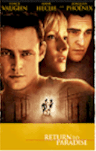
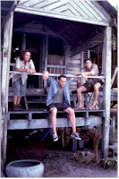
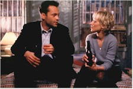

Contents | Features | Reviews | Books | Archives | Store |
 |
|
| Movie Credits | Buy It! |
Return to Paradise
Review by Eddie Cockrell
Posted 14 August 1998
|  | Directed by Joseph Ruben Starring
Vince Vaughn, Anne Heche, Written by Bruce Robinson and Wesley Strick |
An cumulatively moving meditation on responsibility and moral choice, Return to Paradise presents a series of tantalizing ethical exercises framed in a story of international intrigue reminiscent of both Midnight Express and John Boorman's misunderstood and little-seen gem Beyond Rangoon -- as well as elements of the unfolding current events involving those American students in Myanmar (still called Burma by some). But while the film is to be applauded for its dignity and substance (excluding an appallingly tasteless official website that pretends the events of the movie are real), even the rock-solid performances of the three leads can't disguise the dramatic confusion at the heart of the final script. Part thriller, part crisis-of-the-week TV movie and part improbable love story, Return to Paradise is, in the end, a noble misfire that provokes on many levels but convinces -- and satisfies -- on precious few.
After five weeks of raising hell in Penang, Malaysia, three American college graduates go their separate ways. John "Sheriff" Volgecherev and his pal Tony (David Conrad) return to New York, leaving idealist Lewis (Joaquin Phoenix) to pursue his goal of studying endangered orangutans. "I don't have it in me," to stay and do that kind of work, the devil-may-care Sheriff tells Lewis, and he may be right: a shallow thrillseeker who thinks nothing of throwing a rented bicycle in the woods when it breaks or discarding a fat brick of hashish in the trash (they've just got too much of the stuff), Sheriff settles into a cramped Brooklyn flat and the moderately corrupt life of a chauffeur, while the straight-arrow Tony, now engaged to Kerrie (Vera Farmiga), becomes a structural engineer.
Two years later, no-nonsense lawyer Beth Eastern (Anne Heche) shows up with an astonishing story: just after Sheriff and Tony left Penang, the owner of the bicycle brought the police to the trio's seaside shack. While the matter of the bike was apparently settled, Lewis was promptly arrested for holding 104 grams of hashish -- four grams over the limit separating recreational use from dealing (roughly the amount Sheriff tossed). After two years in a hellish prison, the young man has been sentenced to die by hanging eight days hence. Having held his silence all this time, Lewis has told Beth about Sheriff and Tony, and Beth has brokered a tenuous deal with the Malaysian authorities: if Sheriff and Tony return to Panang and admit their guilt, each can serve three years and then the trio can go free. If only one returns, the sentence is six years. If neither return, Lewis will die (as will be seen later in the movie, the Malaysian authorities are very tough on drug-related offenders).
So far, so good. But it's here, in the crucial midsection of the movie where things begin to go awry. Sheriff fluctuates between indecision and manipulation, the tenacious yet mysterious Beth grows oddly indecisive and then just tiresome, a subplot involving ambitious journalist M.J. Major (Jada Pinkett Smith) and the potentially disastrous repercussions of high-profile media coverage of the unfolding drama turns from promising to cliched (although it figures heavily in the denouement), and the film even resorts to the kind of maddeningly improbable coincidences that find principals bumping into each other in restaurants and always being home when someone comes calling for a tense moment.
While further plot details rob the movie of its legitimate power, the action does shift back to Penang, where various crises of the gathered consciences lead to an emotional reunion between Sheriff and Lewis (one of the two best scenes in the film, the other being a delightfully offbeat talk between Sheriff and his mischievously cynical father -- played by the uncredited character actor Raymond J. Barry) and a predictable but still tense courtroom showdown. The final shot is as contrived as it is elegant, sending the obvious message that the same rain falls on those in and out of jail while giving the film a satisfyingly unresolved ending.
If the film seems oddly perfunctory, that may be due to its genesis: in 1988, French director Pierre Jolivet (who had cut his movie teeth co-writing the early Luc Besson movies The Last Battle and Subway) wrote and directed a film called Force Majeure (meaning out of one's control, literally a higher power), about two young Frenchmen who are informed by an Amnesty International lawyer (Alan Bates!) that they hold the life of a long-ago Dutch pal in their hands (the movie also features the then-unknown Kristin Scott-Thomas). Never distributed in America, Force Majeure played a handful of international film festivals and disappeared; Jolivet is at work on En cas de malheur (In All Innocence), a remake of the 1958 Brigitte Bardot film of the same name (a.k.a. Love is My Profession) from the novel by Georges Simenon.
The first version of the English-language script, by Killing Fields writer Bruce Robinson, ended up in the hands of Wesley Strick, who had written that remake of Cape Fear directed by Martin Scorsese and gotten his first screenwriting credit for the 1989 James Woods/Robert Downey Jr. lawyer drama True Believer -- for director Joseph Ruben.
"With this," the director explains, "I wanted to do something that was loosely based on reality. It is a fictionalized account based on 'What If.' The reality is, 'What If' is not that far from the truth. Who doesn't remember the American flogged in Singapore for graffiti [an event referenced in the film]?... It shows how easily westerners can run afoul of the law." Still, the subject matter seems odd for the Hollywood treatment, particularly when the tensions between Robinson's serious treatment of the original and Strick's more commercial additions (the reporter subplot is his) undercut the movie's veracity and, ultimately, its sincerity. They didn't even stick with the original name, opting first for A Long Way to Paradise (a play on the billboard enticing tourists to Malaysia Sheriff sees in New York) and then the current title (which, given the subject matter, is vague, to say the least and exhibits an irony found nowhere else in the film).
Vaughn brings the same callow attraction to Sheriff that marked his breakthrough role in Swingers (the movie that persuaded this film's producers to hire him), while Phoenix (River's little brother, who used to go by the name "Leaf") is chillingly convincing as the broken and doomed Lewis and Conrad follows his performance in The Last Days of Disco with another intense, workmanlike showing. Even Farmiga, as Tony's frustrated fiancée, makes the most of her handful of scenes (her distinctive beauty may be recalled from one of the better episodes of "Law & Order," 1990's "Expert"). The movie's problems might best be summed up in Pinkett Smith's character; in their haste to condemn the wanton liberties of yellow journalism the filmmakers forgot to integrate the thread into the story, so while the actress brings the necessary pushiness to the role she's left hanging until a convenient last-minute plot twist.
As has been the case with her last few movies, it is once again Heche who is getting most of the ink, for another performance of seemingly effortless grace and focus. Her Beth is far from likeable and it isn't the clearest part ever written (her character's major revelation comes about three reels too late), but in it she manages to bring the same combustible formula of emotional ferocity and approachable simplicity that sells her in the most disparate of roles. Following close on the heels of her brilliantly modulated comic turn in Six Days, Seven Nights and drawing on the same raw sexuality of her almost frighteningly intense love scenes in Donnie Brasco and The Juror, Heche is well on her way to dispelling all speculation of her personal life and becoming the most commanding and watchable presence in American movies today. Having said that, one doesn't know what to make of the gratuitous shots of the actress doing business in her hotel room in her underwear (OK, if everybody does it in real life why is she the only one in this movie doing it?), and the entire romantic element between Beth and Sheriff seems not only inappropriate to the story but the film's ultimate surrender to commerciality. In the small world department, Vaughn and Heche will next be seen in Gus Van Sant's shot-for-shot remake of Alfred Hitchcock's Psycho (as Norman Bates and Marion Crane -- say, isn't she first seen in her underwear?), while Vaughn and Phoenix are the co-stars of the upcoming "gothic comedy" Clay Pigeons.
Shot on location in Hong Kong, Macao and Thailand (ironically, Boorman's Beyond Rangoon, about the events in Myanmar/Burma of 1988 commemorated in the leaflets that got those college kids in trouble last week, was shot in Malaysia), cinematographer Reynaldo Villalobos employs a muddy, dank look that makes New York look just as sinister as the faraway prison -- the interiors of which were filmed at the same abandoned Philadelphia jail where Terry Gilliam shot 12 Monkeys (industry vet Villalobos brought the same jungle of the city look to Robert De Niro's directorial debut A Bronx Tale and the 1988 Tom Hanks movie Punchline).
Unlike many of the films consigned to the dumping ground of August, Return to Paradise is made with a conspicuous commitment and a great deal of smart, subtle skill, designed to make audiences think for the vicarious pleasures of the film's moral lessons. Unfortunately, the more thought a moviegoer invests into the movie, the more compromised and ultimately unsatisfying the final product becomes. Like its lead character, Return to Paradise can't find the strength within itself to commit to the sacrifices necessary to tell its urgent, provocative and ultimately tragic story.